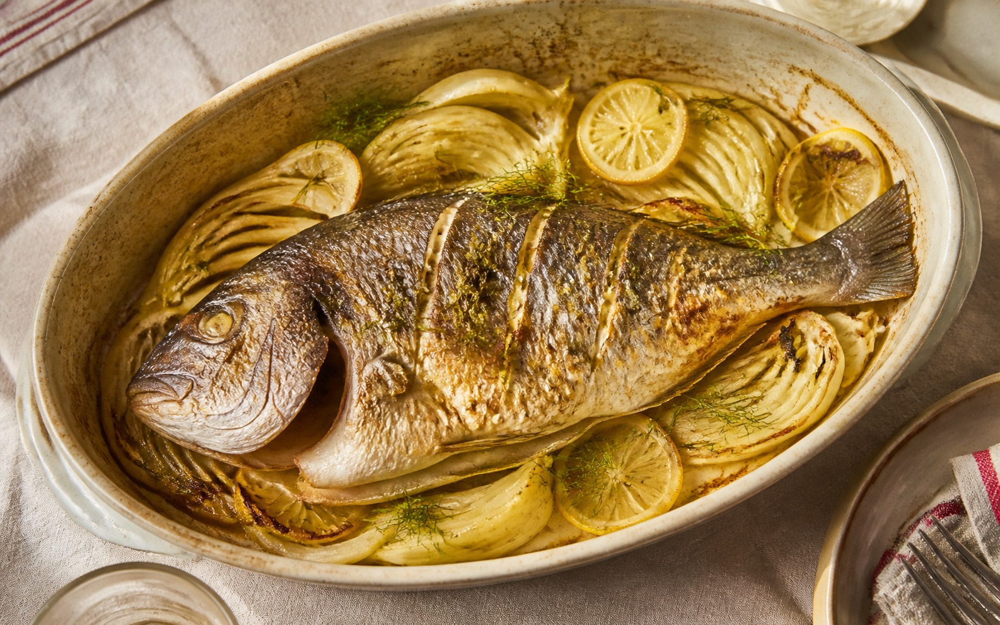

Daurade royale au four, fenouil et citron frais

La daurade royale, poisson noble des côtes méditerranéennes, se prête admirablement à une cuisson au four qui préserve sa chair délicate et nacrée. L'association avec le fenouil, dont l'anis subtil se marie parfaitement au goût iodé du poisson, et le citron qui apporte fraîcheur et acidité, compose un plat d'une grande harmonie gustative. Cette préparation, courante dans la cuisine provençale, demande peu de gestes mais exige une attention précise sur les temps de cuisson pour éviter d'assécher la chair. Choisissez un poisson bien frais, à l'œil vif et aux écailles brillantes, pour garantir la réussite de cette recette conviviale et parfumée, idéale pour un déjeuner du week-end.
Adapter la cuisson à la taille de la daurade
Le poids et l'épaisseur du poisson comptent plus que le nombre de portions. Commencez le contrôle tôt et observez la chair près de l'arête, dans la partie la plus épaisse.
| Poids entier | Premier contrôle à 200 °C chaleur tournante | Repère |
|---|---|---|
| 500 à 700 g | 20 minutes | Chair opaque qui se détache avec une légère résistance. |
| 800 g à 1 kg | 25 minutes | Jus clair et arête centrale chaude. |
| Plus de 1 kg | 30 minutes | Prolonger par tranches de 5 minutes. |
Ces durées sont des points de contrôle, pas des garanties. La forme du poisson, sa température initiale et le four modifient la cuisson.
Ingrédients
- 1 pièce daurade royale entière de 1,2 kg environ, écaillée et videe
- 2 bulbes fenouil frais avec ses fanes
- 2 pièces citrons non traités
- 4 gousses ail nouveau non épluché
- 6 cl huile d'olive vierge extra de qualité
- 1 branche romarin frais
- 3 branches thym frais
- 10 cl vin blanc sec type muscadet
- 1 pièce oignon rouge nouveau
- 1 pincée fleur de sel de Guérande
- 1 pincée poivre du moulin
- 1 poignée olives noires de Nyons dénoyautées
Préparation
Émincez finement le fenouil en gardant quelques fanes pour le service. Émincez l’oignon rouge. Écrasez légèrement l’ail sans le peler. Des tranches fines de fenouil cuiront plus régulièrement.
Utilisez une daurade écaillée et vidée. Épongez-la avec du papier absorbant et incisez légèrement ses flancs. Coupez un citron en rondelles et pressez l’autre. Glissez deux rondelles, une branche de thym et un peu d’ail dans la cavité. Cette recette utilise du citron frais, pas du citron confit.
Chauffez 3 cuillères à soupe d’huile d’olive dans une poêle. Faites revenir fenouil et oignon pendant 8 à 10 minutes en remuant. Ajoutez le vin blanc et laissez réduire environ 2 minutes.
Préchauffez le four à 200 °C chaleur tournante. Étalez les légumes dans un plat assez grand pour poser le poisson à plat. Ajoutez l’ail restant, les rondelles de citron restantes et les olives.
Posez le poisson sur les légumes. Répartissez le reste d’huile d’olive, assaisonnez et ajoutez le romarin et le thym restant. Arrosez d’un peu de jus de citron ; gardez le reste pour le service.
Enfournez à 200 °C chaleur tournante. Pour une daurade de 1,2 kg, commencez à vérifier à 25 minutes et prévoyez environ 30 minutes, puis prolongez par tranches de 5 minutes si nécessaire. Arrosez une fois avec le jus du plat. Vérifiez la partie la plus épaisse près de l’arête centrale : la chair doit être opaque et se détacher facilement. Le temps seul ne suffit pas à vérifier la cuisson.
Laissez reposer 5 minutes, puis levez les filets en retirant les arêtes. Servez avec le fenouil, le jus de cuisson et les fanes réservées. Proposez le jus de citron restant à part.
Conseils et astuces
- Choisissez un poisson conservé au froid et demandez au poissonnier de le vider et de l’écailler.
- Le tableau de cuisson indique des moments de contrôle, pas des durées garanties. L’épaisseur du poisson et le four comptent aussi.
- Réfrigérez rapidement les restes dans un récipient fermé et consommez-les dans les 24 heures.
- Pour conserver des légumes fondants, tranchez le fenouil finement et ne supprimez pas sa précuisson.
Questions fréquentes
Peut-on utiliser une daurade surgelée ?
Oui. Suivez les instructions du fournisseur pour la décongélation au réfrigérateur et épongez le poisson avant cuisson. Le temps nécessaire dépend de sa taille ; ne le décongelez pas sur le plan de travail.
Par quoi remplacer le fenouil ?
Des poireaux émincés ou des courgettes conviennent. Faites-les revenir pour retirer une partie de leur eau et adaptez la précuisson à leur texture.
Quand commencer à vérifier la cuisson ?
Pour le poisson de 1,2 kg prévu ici, vérifiez à partir de 25 minutes à 200 °C chaleur tournante. Si la chair près de l’arête reste translucide, poursuivez par tranches de 5 minutes.